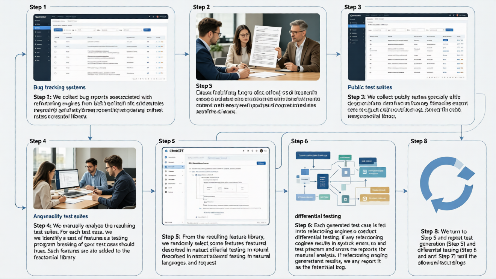
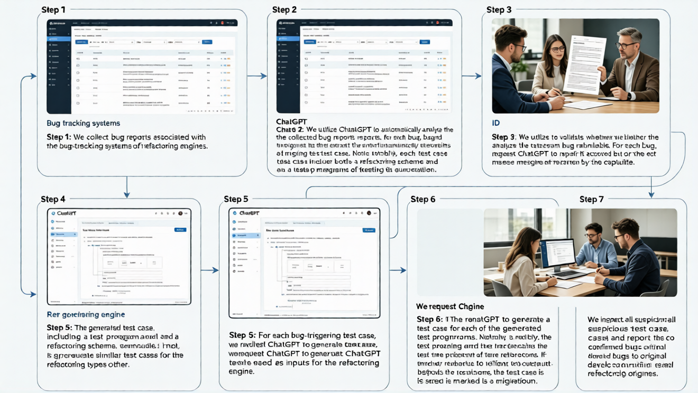
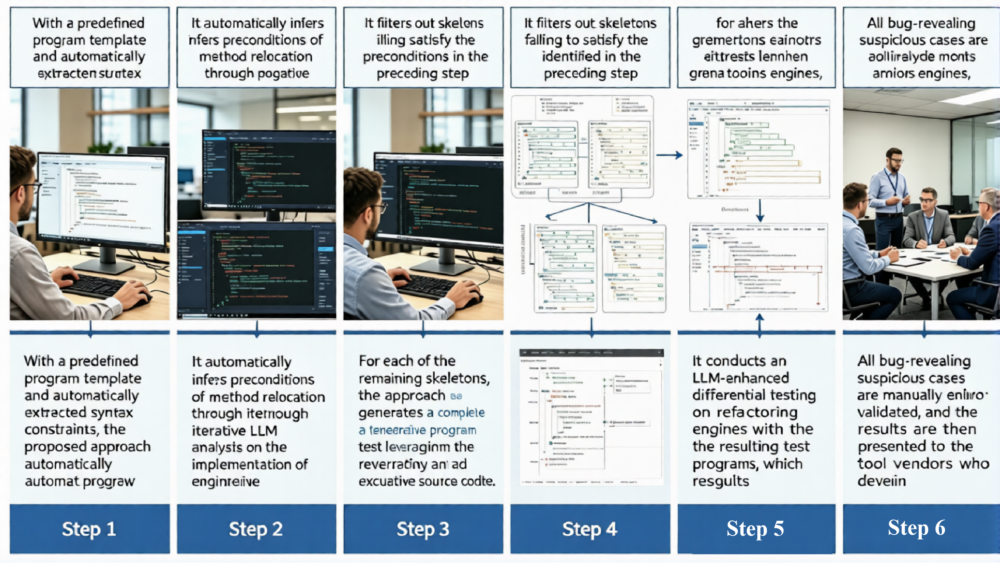

Methodology Overview
Automated testing ecosystem powered by dual-enhancement mechanisms: Historical Defect Driven & Semantic Constraint Guidance.
Phase 01: History-Driven
HealTest: Feature Augmentation
By analyzing thousands of open-source bug reports, we extract fine-grained code features that trigger engine crashes. These features serve as 'genetic markers' for LLMs to generate targeted, complex test cases.
Workflow Detail
- ● Automated parsing of bug reports to build a feature library.
- ● Injection of features into Few-shot prompts for directed synthesis.
- ● Differential testing across 4 mainstream engines to identify flaws.


Phase 02: Logic Migration
EngineTest: Cross-Type Migration
Different refactoring types often share underlying defect mechanisms. EngineTest migrates failed programs from one type to another using LLMs to maximize bug data utility.
Workflow Detail
- ● Extraction of core refactoring logic from existing failed cases.
- ● LLM-based semantic mapping to migrate logic to new target types.
- ● Iterative program repair to ensure syntactic and semantic validity.
Phase 03: Systematic Pruning
RelocTest: Template Filtering
Focusing on method relocation, RelocTest combines systematic skeleton traversal with automated precondition extraction to prune 90% of invalid search space.
Workflow Detail
- ● Grammar-based skeleton generation to cover diverse code structures.
- ● Automated precondition extraction to filter out rejected programs.
- ● LLM filling to transform valid skeletons into executable tests.
